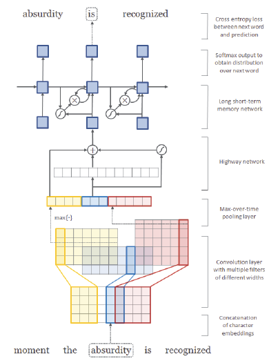
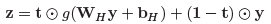

Language model = finding a probability distribution over a sequence of words (traditionally estimated n-gram probabilities)
This model trains CNN + RNN to create language model based on character level embedding
Advantages of character level embedding:
No need for morphological tagging
Can embed morphological properties of an input language
Free from out-of-vocabulary issues

Architecture:
Embedding vector of each character is concatenated to form matrix representation of each word
Convolution with multiple filters, which essentially picking out n-grams of characters
Max-pooling to create a fixed dimensional word vector
Apply Highway Network to the word vector

Instead of complete non-linear transformation, it is a weighted non-linear transformation
Using additional affine transformation + non-linearity as "carry gate", this network adaptively carries some meaningful information of the input vector directy to the output vector.
LSTM to predict the subsequent word for the given input word (trained on cross entropy loss)
While word embedding vectors focus on the contextual information of the input's surrounding words, this model relies on the context of each character within the word to generate word vectors.
In a way, it can create more isolated/localized embedding of a word that captures the internal structure or the morphological properties of a word (Representing words in different dimensional space)
No wonder combination of this localized embedding method with traditional word2vec like word embedding method shows improved performance in various NLP tasks